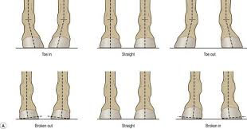
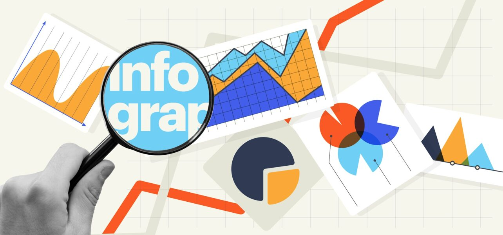
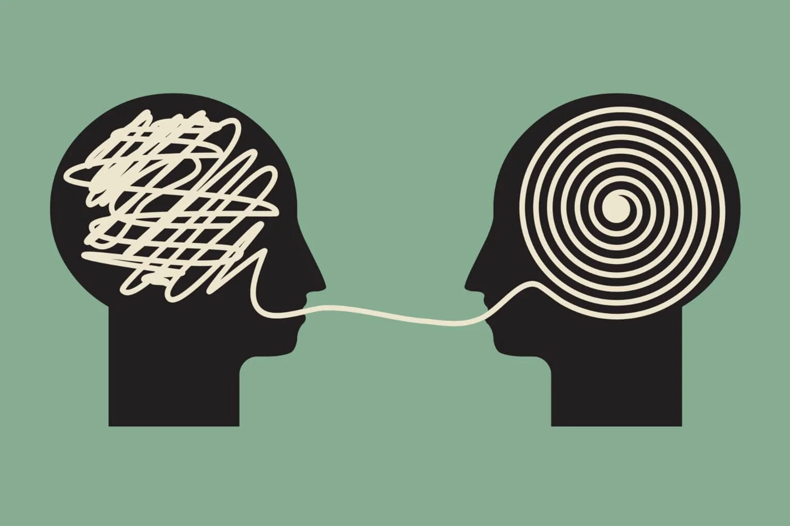

Let's approach DataScience towards Veterinary medicine
1)Collect
2)Model
3)Deploy
Recent Outside Projects
Recent DataScience Projects

Project 1
Model Lameness (Toe-In Toe-Out Classification) with OpenMMLab
Project 2
Clinic & Hospital Management System (Offline part)
Project 3
Crowdsource from Veterinary aspects
Recent Outside Projects
Project 4
Bromelain Neuroprotective effects investigation on Cerebellum after REM Sleep Deprivation in Rat

Project 5
Infographics Project
Project 6
Data Collection first issue in Veterinary medicine vs all others medicine

Project 7
Articulation in new era (AI)
Project 8
Digital Data & Annotation Data
Project 9
TOEFL Preparation